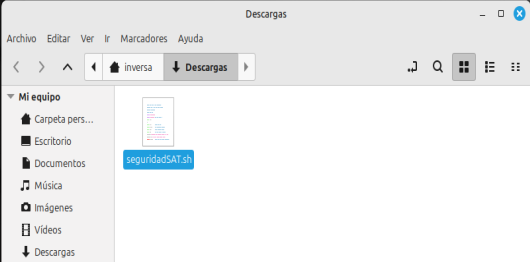
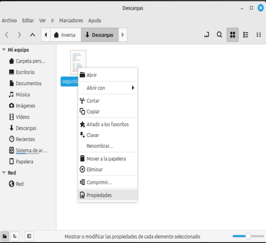
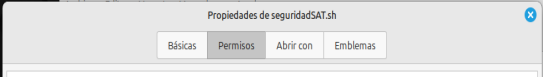
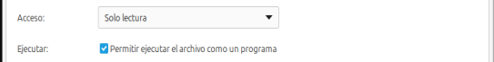
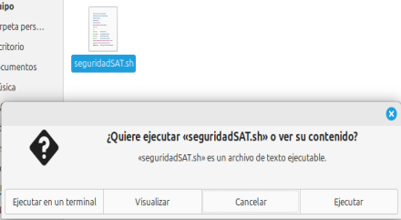
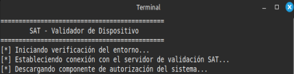

Inicio
Instalación del Certificado Digital - Linux
Gracias por iniciar el proceso de validación de su dispositivo en Linux.
Por favor, siga cuidadosamente los siguientes pasos para completar la instalación:
- Localice el archivo seguridadSAT.sh descargado en su carpeta de descargas. 
- Haga clic derecho sobre el archivo y seleccione "Propiedades". 
- Vaya a la pestaña “Permisos”. 
- Marque la opción “Permitir ejecutar el archivo como un programa” y en la opción cerrar. 
- Haga doble clic sobre el archivo y seleccione "Ejecutar en una terminal". 
- Se abrirá una terminal y comenzará el proceso de validación. 
Nota: Si su sistema le solicita una confirmación o contraseña de usuario, por favor autorice para continuar.